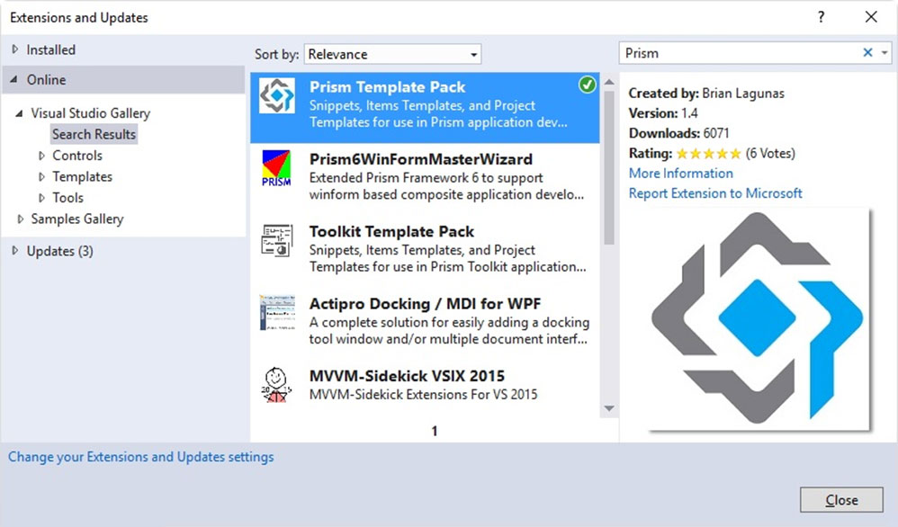

Build easily applications in WPF, Windows 10 UWP and Xamarin Forms.
Prism is a framework for building loosely coupled, maintainable, and testable XAML applications in WPF, Windows 10 UWP, and Xamarin Forms. Separate releases are available for each platform and those will be developed on independent timelines. Prism provides an implementation of a collection of design patterns that are helpful in writing well-structured and maintainable XAML applications, including MVVM, dependency injection, commands, EventAggregator, and others. Prism's core functionality is a shared code base in a Portable Class Library targeting these platforms.
Those things that need to be platform specific are implemented in the respective libraries for the target platform. Prism also provides great integration of these patterns with the target platform. For example, Prism for UWP and Xamarin Forms allows you to use an abstraction for navigation that is unit testable, but that layers on top of the platform concepts and APIs for navigation so that you can fully leverage what the platform itself has to offer, but done in the MVVM way.
Getting Started
Step 1
Install the Template Pack

Step 2
Create a project

Step 3
Run the code

Prism Template Pack
The Prism Template Pack is available on the Visual Studio Gallery. To install, just go to Visual Studio -> Tools -> Extensions and Updates. Then search for Prism in the online gallery: